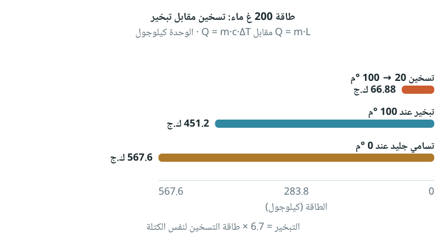

التبخر والتكاثف: انتقال الماء بين الحالتين
Evaporation and Condensation
التبخر تحوّل سائل إلى بخار عند سطحه دون بلوغ الغليان، والتكاثف عكسه. تبخير 200 غ ماء يستهلك 451.20 ك.ج — أي 6.7 أضعاف طاقة تسخينها من 20 إلى 100 °م — ولهذا يبرد الجلد بالعرق ويُنتج المكثّف ماءً سائلًا.
بلّل ظهر يدك بقليل من الماء واترك الهواء يمرّ: تحسّ ببرودة لا تفسّرها حرارة الغرفة. السبب أن أسرع الجزيئات تغادر السطح، فتحمل معها طاقة أكبر من المتوسط، فينخفض متوسط طاقة ما تبقّى — أي تنخفض درجة حرارة الماء والجلد. هذا هو التبخر: انتقال من السائل إلى البخار عند السطح، ويحدث في أي درجة حرارة لا عند 100 °م فقط. وفي الاتجاه المعاكس، حين يلامس البخار سطحًا أبرد يترك طاقته الكامنة ويعود سائلًا: هذا التكاثف، وهو مصدر الحرارة الذي يفسّر خطورة البخار في الأنابيب وسخونة الزجاج فوق كوب الشاي. التبريد والتكييف وتحلية المياه وتجفيف الأغذية كلها صناعات قائمة على هذين الاتجاهين المتعاكسين.
كيف تعمل الظاهرة؟
ضغط البخار المشبع يزداد بدرجة الحرارة، والتبخر يستمر ما دام ضغط البخار فوق السطح أقل من المشبع عند درجة السطح. في الهواء الجاف يكون الضغط الجزئي للبخار منخفضًا فيتسارع التبخر؛ وحين تقترب الرطوبة النسبية من 100% يتوقف صافي التبخر. التكاثف يحدث عندما ينخفض البخار إلى ما دون درجة التشبع: على سطح بارد، أو بانخفاض الضغط في مكثّف. وفي كلتا الحالتين لا تتغير درجة الحرارة أثناء التحول الطوري عند ضغط ثابت، بل تُصرف الطاقة في تفكيك أو بناء الروابط بين الجزيئات.
العلاقة بالأرقام
حرارة التبخير الكامنة للماء عند 100 °م هي 2256 ك.ج/كغ، فتبخير 200 غ يحتاج 0.2×2256 = 451.20 ك.ج. أما تسخين الكتلة نفسها من 20 إلى 100 °م فيحتاج 0.2×4.18×80 = 66.88 ك.ج، أي أن التبخير يكلّف 6.7 أضعاف. وتبخّر 10 غ من العرق يسحب 10×2256/1000 = 22.56 ك.ج من الجلد. وللتسامي (جليد ← بخار) عند 0 °م حرارة كامنة أعلى: 2838 ك.ج/كغ.
مفاهيم متقاربة
الغليان تبخر يحدث داخل السائل عند ضغط البخار المساوي للضغط المحيط، أما التبخر فيحدث عند السطح في أي درجة حرارة. والتكاثف ليس «تبريد بخار» فقط: البخار يعطي حرارة كامنة كاملة عند عودته سائلًا، ولهذا يحرق البخار أكثر مما يحرق الماء الساخن بالدرجة نفسها. ويفترق التبخر عن التجفيف: التجفيف إزالة رطوبة بفعل فرق ضغط البخار بين المادة والهواء، وقد يحدث بلا تبخر سطحي ظاهر.
حدود التطبيق
القيم الكامنة المذكورة عند ضغط جوي واحد؛ وتتغير مع الضغط ودرجة الحرارة (تنخفض حرارة التبخير بارتفاع درجة الحرارة وتنعدم عند النقطة الحرجة 374 °م و22.06 ميغاباسكال). وفي حساب مبادل تكاثف لا يكفي الحمل الكامن: يلزم معامل انتقال حرارة على جانب التكاثف، وهو يتغير بحسب كون الفيلم ساقطًا أو قطرات. ولا تصلح المعادلات الساكنة لتدفق سريع يحدث فيه تبخر ومكث معًا كما في فوهات الرش والتوربينات البخارية.

| الكمية | القيمة | المصدر |
|---|---|---|
| حرارة التبخير الكامنة للماء عند 100 °م | 2,256 ك.ج/كغ | [1] |
| تبخير 200 غ ماء عند 100 °م | 451.20 ك.ج | [1] |
| تسخين الكتلة نفسها من 20 إلى 100 °م | 66.88 ك.ج | [1] |
| نسبة طاقة التبخير إلى التسخين 20→100 °م | 6.7 مرة | [1] |
| حرارة التسامي للجليد عند 0 °م | 2,838 ك.ج/كغ | [2] |
المصادر
- 1 College Physics 2e — 14.3 Phase Change and Latent Heat — OpenStax. openstax.org/books/college-physics-2e/pages/14-3-phase-change-and-latent-heat · اطُّلع عليه 2026-11-19
- 2 مختبر الديوان — تبريد الكحول بالتبخير — ديوان المعرفة. infiradev.com/diwan/lab/evaporative-cooling-alcohol.html · اطُّلع عليه 2026-11-19
استشهد بهذا المصطلح
الصيغتان مبنيتان من بيانات الصفحة نفسها: العنوان والتاريخ ورابط النسخة المنشورة.
التبخر والتكاثف: انتقال الماء بين الحالتين — Evaporation and Condensation. (2026). ديوان المعرفة — انفراد. https://infiradev.com/diwan/terms/evaporation-condensation.html
@misc{evaporation-condensation2026,
title = {التبخر والتكاثف: انتقال الماء بين الحالتين},
titleaddon = {Evaporation and Condensation},
howpublished = {{ديوان المعرفة — انفراد} — مرجع علمي عربي},
year = {2026},
url = {https://infiradev.com/diwan/terms/evaporation-condensation.html},
urldate = {2026-11-19},
note = {مراجعة علمية: عبدالله الهويدي — مراجعة في تطبيق انفراد}
}
راجعه: عبدالله الهويدي — مراجعة في تطبيق انفراد · 2026-11-19 · آخر تحديث 2026-11-19